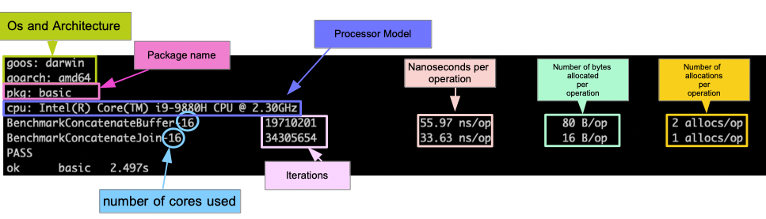

Go¶
Install¶
With HomeBrew (MacOS)¶
Handling multiple versions with HomeBrew¶
Let's say you have go 1.23 currently, and you want to install and use go 1.22
https://gist.github.com/BigOokie/d5817e88f01e0d452ed585a1590f5aeb
If you're using VsCode, set the go version it used in settings.json
Style¶
https://github.com/Pungyeon/clean-go-article
Use camel style for variables.
Rules¶
function name¶
CamelCase, otherwise might have unexpected results
Init¶
Will generate go.mod
Dependencies¶
Install a specific module¶
You may see a lot of older Internet guides using go get, but it's deprecated. See https://go.dev/doc/go-get-install-deprecation.
Install current project's dependencies¶
Automatically check your code, update go.mod, and install all required dependencies in go.mod to GOMODCACHE if you haven't
Change module path¶
The go modules are stored in Go env GOMODCACHE (go env GOMODCACHE to check it)
You can change it to store the modules somewhere else
go get from private domain/repo¶
Suppose you want to go get git.evilcorp.com/EVILPRODUCT/evil-event
Do this
Import¶
Go importing 101
https://stackoverflow.com/a/68710251/15493213
Run¶
Garbage Collection¶
Why Discord is switching from Go to Rust (2020) | Discord Blog
According to the blog, Go (at least v1.10 and before) will do garbage collection every 2 minutes, which may cause latency spikes.
This is allegedly fixed in v1.14. See Go runtime: 4 years later (2022) | Go Blog.
Internal Documentations¶
See https://tip.golang.org/doc/comment
Documenting your codes¶
To write a docstring for a package / function / everything, just comment before it.
This will be recognized by your IDE as well as the following tools.
CLI doc¶
To see the docstring of a package, external or internal
Web doc¶
Install godoc
In your project root, run
Then go to http://localhost:6060/pkg/?m=all. Without m=all it will hide internal/. Related issue.
Environmental variables¶
Go Env¶
To see all Go env
To see a specific Go env e.g. GOPATH
To set a Go env e.g. GOMODCACHE
Dotenv¶
https://towardsdatascience.com/use-environment-variable-in-your-next-golang-project-39e17c3aaa66
Viper¶
To use .env
Slice¶
handy libraries¶
- slices
- gslice
The internal of slice¶
Arrays, slices (and strings): The mechanics of 'append' | Go Blog
Slice is a slice of a fixed-sized array, with a pointer pointing to the start and a length value specifying the length.
type sliceHeader struct {
Length int
ZerothElement *byte
}
slice := sliceHeader{
Length: 50,
ZerothElement: &buffer[100], // pointer to the underlying array
}
When copied or passed to a function, a change to the length won't apply to the original slice since the length is a value not a pointer.
Here we see that the contents of a slice argument can be modified by a function, but its header cannot. The length stored in the slice variable is not modified by the call to the function, since the function is passed a copy of the slice header, not the original.
func SubtractOneFromLength(slice []byte) []byte {
slice = slice[0 : len(slice)-1]
return slice
}
func main() {
fmt.Println("Before: len(slice) =", len(slice))
newSlice := SubtractOneFromLength(slice)
fmt.Println("After: len(slice) =", len(slice))
fmt.Println("After: len(newSlice) =", len(newSlice))
}
How append works¶
If the new length of slice is greater than the length of the underlying array, it will append() will first allocate a new array (length = 1.5 x new slice length), and the copy all the data into the new array. Since it's a different array, the address of the underlying array is obviously changed also.
If the original array is capable to hold all the new data already, it will simply copy the new data into the array.
// Append appends the elements to the slice.
// Efficient version.
func Append(slice []int, elements ...int) []int {
n := len(slice)
total := len(slice) + len(elements)
if total > cap(slice) {
// Reallocate. Grow to 1.5 times the new size, so we can still grow.
newSize := total*3/2 + 1
newSlice := make([]int, total, newSize)
copy(newSlice, slice)
slice = newSlice
}
slice = slice[:total]
copy(slice[n:], elements)
return slice
}
Slice of Values vs. Slice of Pointers¶
If the underlying array of your slice is big enough for your need, there is no point at using slice of pointers, as it will need to allocate a new piece of memory for the pointer for each entry in the slice.
However, if the your your slice will outgrow the underlying array when being appended, a new array with sufficient length will be allocated, copying all the data from the original array to the new one. This is when using slice of pointers is a better option, since only the pointers will need to be copied, not the entire values.
To test the performance difference yourself
main_test.go
package main
import (
"testing"
)
type SmallStruct struct {
A int
B int
}
const (
SLICE_LEN = 100
ARRAY_LEN = 100
)
func BenchmarkSliceOfSmallStructs(b *testing.B) {
b.ReportAllocs()
for i := 0; i < b.N; i++ {
slice := make([]SmallStruct, 0, ARRAY_LEN)
for j := 0; j < SLICE_LEN; j++ {
slice = append(slice, SmallStruct{A: j, B: j + 1})
}
}
}
func BenchmarkSliceOfPointersOfSmallStructs(b *testing.B) {
b.ReportAllocs()
for i := 0; i < b.N; i++ { // test count
slice := make([]*SmallStruct, 0, ARRAY_LEN)
for j := 0; j < SLICE_LEN; j++ {
slice = append(slice, &SmallStruct{A: j, B: j + 1})
}
}
}
type BigStruct struct {
F1, F2, F3, F4, F5, F6, F7 string
I1, I2 int
I3, I4, I5, I6, I7, I8, I9, I10, I11, I12 int
A1, A2, A3, A4, A5, A6, A7 SmallStruct
A8, A9, A10, A11, A12, A13, A14 SmallStruct
}
func BenchmarkSliceOfBigStructs(b *testing.B) {
b.ReportAllocs()
for i := 0; i < b.N; i++ {
slice := make([]BigStruct, 0, ARRAY_LEN)
for j := 0; j < SLICE_LEN; j++ {
slice = append(slice, BigStruct{
I1: j,
I2: j + 1,
})
}
}
}
func BenchmarkSliceOfPointersOfBigStructs(b *testing.B) {
b.ReportAllocs()
for i := 0; i < b.N; i++ {
slice := make([]*BigStruct, 0, ARRAY_LEN)
for j := 0; j < SLICE_LEN; j++ {
slice = append(slice, &BigStruct{
I1: j,
I2: j + 1,
})
}
}
}
To see direct ouputs
To see analyzed outputs, install benchstat first
and then
See #Benchmarking for more
Output when SLICE_LEN = 100, ARRAY_LEN = 100:
goos: darwin
goarch: amd64
pkg: gslice
cpu: Intel(R) Core(TM) i7-9750H CPU @ 2.60GHz
│ benchmark.txt │
│ sec/op │
SliceOfSmallStructs-12 89.89n ± 4%
SliceOfPointersOfSmallStructs-12 2.133µ ± 8%
SliceOfBigStructs-12 3.363µ ± 7%
SliceOfPointersOfBigStructs-12 8.597µ ± 3%
geomean 1.534µ
│ benchmark.txt │
│ B/op │
SliceOfSmallStructs-12 0.000 ± 0%
SliceOfPointersOfSmallStructs-12 1.562Ki ± 0%
SliceOfBigStructs-12 0.000 ± 0%
SliceOfPointersOfBigStructs-12 43.75Ki ± 0%
geomean ¹
¹ summaries must be >0 to compute geomean
│ benchmark.txt │
│ allocs/op │
SliceOfSmallStructs-12 0.000 ± 0%
SliceOfPointersOfSmallStructs-12 100.0 ± 0%
SliceOfBigStructs-12 0.000 ± 0%
SliceOfPointersOfBigStructs-12 100.0 ± 0%
geomean ¹
¹ summaries must be >0 to compute geomean
Output when SLICE_LEN = 100, ARRAY_LEN = 10:
goos: darwin
goarch: amd64
pkg: gslice
cpu: Intel(R) Core(TM) i7-9750H CPU @ 2.60GHz
│ benchmark_raw.txt │
│ sec/op │
SliceOfSmallStructs-12 880.6n ± 17%
SliceOfPointersOfSmallStructs-12 2.815µ ± 7%
SliceOfBigStructs-12 20.41µ ± 15%
SliceOfPointersOfBigStructs-12 9.213µ ± 3%
geomean 4.646µ
│ benchmark_raw.txt │
│ B/op │
SliceOfSmallStructs-12 4.812Ki ± 0%
SliceOfPointersOfSmallStructs-12 3.906Ki ± 0%
SliceOfBigStructs-12 147.2Ki ± 0%
SliceOfPointersOfBigStructs-12 46.09Ki ± 0%
geomean 18.90Ki
│ benchmark_raw.txt │
│ allocs/op │
SliceOfSmallStructs-12 4.000 ± 0%
SliceOfPointersOfSmallStructs-12 104.0 ± 0%
SliceOfBigStructs-12 4.000 ± 0%
SliceOfPointersOfBigStructs-12 104.0 ± 0%
geomean 20.40 20.40
Please read Arrays, slices (and strings): The mechanics of 'append' | Go Blog if you're confused.
Discussions containing partial truths
- Bad Go: slices of pointers | Medium
- Slices of structs vs. slices of pointers to structs | Stack Overflow
slice iteration vs. map lookup¶
for N < 20, average case of slice iteration is faster than map lookup
main_test.go
package main
import (
"slices"
"testing"
)
const (
N = 20
key = 10
)
// Generate a slice of N integers
func generateSlice(n int) []int {
slice := make([]int, n)
for i := 0; i < n; i++ {
slice[i] = i
}
return slice
}
// Generate a map of N integers
func generateMap(n int) map[int]struct{} {
m := make(map[int]struct{}, n)
for i := 0; i < n; i++ {
m[i] = struct{}{}
}
return m
}
// Benchmark for slice lookup
func BenchmarkSliceLookup(b *testing.B) {
slice := generateSlice(N)
b.ResetTimer()
for i := 0; i < b.N; i++ {
if ok := slices.Contains(slice, key); ok {
}
// for _, v := range slice {
// if v == key {
// break
// }
// }
}
}
// Benchmark for map lookup
func BenchmarkMapLookup(b *testing.B) {
m := generateMap(N)
b.ResetTimer()
for i := 0; i < b.N; i++ {
if _, ok := m[key]; ok {
}
}
}
command
result
Docstring¶
Comments directly above a function will become docstrings.
// this is an example function
// this function will return the result of a + b
func add(a int, b int) int {
c := a + b
return c
}
Interface¶
https://gobyexample.com/interfaces
type geometry interface {
area() float64
perim() float64
}
type rect struct {
width, height float64
}
type circle struct {
radius float64
}
func (r rect) area() float64 {
return r.width * r.height
}
func (r rect) perim() float64 {
return 2*r.width + 2*r.height
}
func (c circle) area() float64 {
return math.Pi * c.radius * c.radius
}
func (c circle) perim() float64 {
return 2 * math.Pi * c.radius
}
func measure(g geometry) {
fmt.Println(g)
fmt.Println(g.area())
fmt.Println(g.perim())
}
func main() {
r := rect{width: 3, height: 4}
c := circle{radius: 5}
measure(r)
measure(c)
}
Channel¶
pipe
Dealing with Json¶
Read json from file¶
If your json has a clearly defined structure, then define your struct first
type struct myJsonObject {
// my json schema
}
func getJsonFromFile() []myJsonObject {
// read raw json from sample.json
jsonFile, err := os.Open("sample.json")
if err != nil {
fmt.Println(err)
}
defer jsonFile.Close()
var arrayOfJson []myJsonObject
byteValue, _ := ioutil.ReadAll(jsonFile)
json.Unmarshal(byteValue, &arrayOfJson)
return arrayOfJson
}
https://tutorialedge.net/golang/parsing-json-with-golang/
grpc¶
sample
https://github.com/grpc/grpc-go/tree/master/examples/helloworld
proto file
https://stackoverflow.com/a/70587449/15493213
GORM¶
Go's ORM library
Execute raw query¶
Enum¶
Note that AutoMigrate will not migrate enum changes. You can alter table directly, or drop the table and then let AutoMigrate recreate the tables (if not in production)
Use https://threedots.tech/post/safer-enums-in-go/
e.g.
type DataScope int
const (
UNKNOWN_DATASCOPE DataScope = iota // -> 0
NEW_CASE // -> 1
PENDING_REVIEW // -> 2
USER_REPLY // -> 3
)
type Report struct {
DataScope DataScope `gorm:"column:data_scope;type:enum('NEW_CASE', 'PENDING_REVIEW', 'USER_REPLY');index:,sort:desc" json:"dataScope"`
}
Use https://github.com/dmarkham/enumer to generate enumer file for DataScope.
To map string back to enum, just use the URLTypeString function in the generated enumer file. But if you want to implement it manually,
package alphabets
type Alphabets int
const (
A Alphabets = iota
B
C
)
var MapEnumStringToAlphabets = func() map[string]Alphabets {
m := make(map[string]Alphabets)
for i := A; i <= C; i++ {
m[i.String()] = i
}
return m
}()
https://stackoverflow.com/a/75205150/15493213
JSON¶
https://github.com/go-gorm/datatypes#json
Transaction¶
https://gorm.io/docs/transactions.html
Upsert¶
https://gorm.io/docs/create.html#Upsert-x2F-On-Conflict
But MySQL doesn't support specifying column, instead it always check the primary key for conflict check, so better use FirstOrCreate and the Update if RowsAffected is 0
res := r.dbClient.DB().
WithContext(ctx).
Model(&model.Report{}).
Where("date = ?", date).
FirstOrCreate(report)
err := res.Error
if err != nil {
return err
}
if res.RowsAffected != 0 { // record created
return nil
}
// update existing record
if err = r.dbClient.DB().
WithContext(ctx).
Model(&model.Report{}).
Where("date = ?", date).
Update("waiting_day", waitingDay).Error; err != nil {
return err
}
hooks¶
https://gorm.io/docs/hooks.html
- AfterFind
- auto execute after querying
Select 2 interlinked tables¶
Suppose you have 2 tables, Project & Incident. 1 project can have multiple incidents, but 1 incident only belongs to 1 project.
type Project struct {
ID uuid.UUID `json:"id" gorm:"column:id;primary_key;type:varchar(64);not null"`
Incidents []Incident `gorm:"foreignkey:IncidentID"`
}
type Incident struct {
ID uuid.UUID `json:"id" gorm:"column:id;primary_key;type:varchar(64);not null"`
ProjectID uuid.UUID `json:"project_id" gorm:"column:incident_id;type:varchar(64);not null"`
Project Project `gorm:"foreignkey:ProjectID"`
}
You can query the project alongside its incident in GORM with
func (r projectRepository) GetProjectID(ctx context.Context, projectID uuid.UUID) (project *model.Project, err error) {
if err := r.dbClient.DB().
WithContext(ctx).
Preload("Incidents").
Where("id = ?", projectID).
First(&project).Error; err != nil {
return nil, err
}
return
}
If you look at its raw query, it still makes 2 separate queries for Project & Incident table, but at least you don't have to handle it yourself.
Set a nullable field back to null¶
To set a nullable field of a record from having a value back to null, you can't use a simple pointer type when declaring a model, but a pointer to the corresponding type in the sql package.
type Model struct {
Amount *sql.NullFloat64
}
// amount will not be updated
gorm.Updates(Model{Amount: nil})
// amount will be updated as a null
gorm.Updates(Model{Amount: &sql.NullFloat64{}})
// amount will be updated as a 10.50
gorm.Updates(Model{Amount: &sql.NullFloat64{Float64: 10.50, Valid: true}})
See https://stackoverflow.com/a/70596488/15493213
Error¶
You can add error manually, which is useful when writing unit tests
or simply
To revert, just reassign it to null
Logging¶
To print the raw query in your terminal
import (
gormLogger "gorm.io/gorm/logger"
)
db.Config.Logger = gormLogger.Default.LogMode(gormLogger.Info)
AutoMigrate¶
You can let gorm migrate the tables for you. It does not migrate your tables completely however, for example it has some problems dealing with enum & foreign key.
ORM¶
#GORM¶
Ent¶
From Facebook
Migration¶
- have automigration
- uses #Atlas for versioned migration
db migration¶
golang-migrate¶
https://github.com/golang-migrate/migrate
Won't auto gen migration files
goose¶
https://github.com/pressly/goose
Won't auto gen migration files
Multiple reddit comments don't recommend it
Atlas¶
https://atlasgo.io/guides/orms/gorm
Auto gen migration files by comparing a blank MySQL db to a MySQL db holding your target tables.
Setup¶
Create a blank schema in local.
docker run --rm --name atlas-db-dev -d -p 23306:3306 -e MYSQL_DATABASE=dev -e MYSQL_ROOT_PASSWORD=pass mysql:8
docker run --rm --name atlas-db-dev -d -p 23306:3306 -e MYSQL_DATABASE=dev -e MYSQL_ROOT_PASSWORD=pass mysql:8
Create a blank schema (migration_target in this example) in your local mysql and run gorm AutoMigrate to fill it with the target schemas.
Starting with existing tables¶
Generate baseline file
atlas migrate diff baseline \
--dev-url "mysql://root:pass@:23306/dev" \
--to "mysql://{username}:{password}@:3306/migration_target"
Apply 1st migration
atlas migrate apply \
--url "mysql://{username}:{password}@:23306/{real_schema}" \
--baseline "{baseline_title}"
Auto generate migration file¶
atlas migrate diff \
--dev-url "mysql://root:pass@:23306/dev" \
--to "mysql://{username}:{password}@:3306/migration_target"
Check migration status¶
Run migrations¶
https://atlasgo.io/versioned/apply
Problems¶
- when you want to alter a foreign key column type, you'll need to drop the key first and then add back later, but it won't write it for you in the auto generated migration files
- no rollback
Goroutine¶
concurrency
With WaitGroup¶
wg.Add(n)-> n threadswg.Wait()-> wait for all threads to end and then continuego myfunction()-> Start a thread executingmyfunction()
package main
import (
"fmt"
"sync"
)
func printStr(str string, wg *sync.WaitGroup) {
defer wg.Done()
fmt.Println(str)
}
func main() {
var wg sync.WaitGroup
strList := []string{"a", "b", "c", "d", "e", "f", "g", "h", "i", "j"}
wg.Add(len(strList))
for _, str := range strList {
go printStr(str, &wg)
}
wg.Wait()
}
Limit amount of goroutines¶
package main
import "fmt"
const MAX = 20
func main() {
sem := make(chan struct{}, MAX)
for {
sem <- struct{}{} // will block if there is MAX ints in sem
go func() {
fmt.Println("hello again, world")
<-sem // removes an int from sem, allowing another to proceed
}()
}
}
https://stackoverflow.com/a/25306439/15493213
Fx - dependency injection¶
Context timeout¶
Default context timeout is 15s, to change it, specify it under fx.New()
Unit testing¶
Writing test files¶
Your test file should be in *_test.go format, in the same directory as your main file.
Functions should be in Test* format.
e.g.
// main_test.go
package mul // notice the same name
import (
"testing"
"github.com/stretchr/testify/assert"
)
func TestMul(t *testing.T) {
assert.Equal(t, Mul(1, 2), 2)
}
Run something after each unit test¶
Using testify, you can add a TearDownTest() function, and it will run the function after each unit test.
For example, if you're using testcontainer and want to truncate your tables after each unit test, write that in the function.
Run Tests¶
To run all test files recursively
To run the test file in the current directory
To run the test file in a specific package
-v for verbose
Save results to file
go test -v -cover -covermode=count -coverpkg=./... -coverprofile=coverage.out ./...
go test -json ./... > report.json
VsCode helper¶
You'll see a snippet allowing you to execute the test directly in VsCode. You can add additional flag in the settings.
For example, if you want it to always run with -v (verbose), add this in settings
See https://github.com/Microsoft/vscode-go/issues/1377#issuecomment-347431580
assert equal of list ignoring order¶
assert.ElementsMatch()
https://github.com/stretchr/testify/issues/275#issuecomment-480823210
Benchmarking¶
- Benchmarking in Golang: Improving function performance
- Chapter 34: Benchmarks | Practical Go Lessons

Mock¶
GoMock¶
sqlmock¶
https://pkg.go.dev/github.com/DATA-DOG/go-sqlmock
https://github.com/go-gorm/gorm/issues/1525#issuecomment-376164189
https://betterprogramming.pub/97ee73e36526
Gin¶
Binding parameters or body¶
You can bind the query parameters or json body to a struct.
To bind query parameters or form-data, specify form in struct tags. To bind json body, specify json in struct tags.
type Filter struct {
Product bool `json:"product" form:"product"`
SubProduct bool `json:"sub_product" form:"sub_product"`
Project bool `json:"project" form:"project"`
}
func (h topHandlers) HandleGetServices(c *gin.Context) {
filter := &model.Filter{}
// binding query params
err := c.ShouldBind(filter)
// binding json body
err := c.ShouldBindJSON(filter)
// rest of the codes
}
Don't forget to specify Content-Type: applicaiton/json in request header to bind json body.
mock¶
A helper function helping you set up a mock context and a recorder recording the response of your request
func MockGin() (*gin.Context, *httptest.ResponseRecorder) {
w := httptest.NewRecorder()
c, _ := gin.CreateTestContext(w)
c.Request = &http.Request{
Header: make(http.Header),
URL: &url.URL{},
Body: nil,
}
return c, w
}
Create your mock request, send the context into your handler function, and see if the response code and data is correct
func TestGetService(){
c, w := test_helper.MockGin()
c.Request.URL.RawQuery = "id=1"
expectedService := model.Service{}
handler.HandleGetService(c) // assuming it will return a http status code and a model.Service struct, which will be recorded by w
assert.Equal(suite.T(), http.StatusOK, w.Code)
expected, _ := json.Marshal(expectedService)
assert.Equal(suite.T(), string(expected), w.Body.String())
}
To emulate a post request with a json payload
c, w := test_helper.MockGin()
jsonPayload := `{
"hi": "there"
}`
c.Request.Body = io.NopCloser(strings.NewReader(jsonPayload))
c.Request.Header.Set("Content-Type", "application/json")
Troubleshooting¶
problems in binding bool field with binding:"required" tag¶
You can only use *bool
https://github.com/gin-gonic/gin/issues/685
HTTP Client¶
Proxy¶
func NewHTTPClientWithProxy(proxyURL string) *resty.Client {
client := resty.New()
client.SetProxy(proxyURL)
return client
}
proxyURL format: http://<username>:<password>@<host>:<port>
or http://<host>:<port> without authentication
Remember to use http even for https!
Logging with Logrus¶
github.com/sirupsen/logrus
Write to local file¶
logger := logrus.New()
currentTime := time.Now()
today := currentTime.Format("2006-01-02")
logFile := fmt.Sprintf("log_%s.txt", today)
f, err := os.OpenFile(logFile, os.O_WRONLY|os.O_CREATE|os.O_APPEND, 0644)
if err != nil {
fmt.Println("Failed to create logfile" + logFile)
panic(err)
}
logger.SetOutput(f)
https://www.golinuxcloud.com/golang-logrus/
AES Encryption¶
Best practice: generate random IV each time and prepend it to your encrypted text. When decrypting, extract the IV from the encrypted text. See https://stackoverflow.com/questions/8041451/
Implementation
package main
import (
"crypto/aes"
"crypto/cipher"
"crypto/rand"
"encoding/base64"
"fmt"
"io"
)
func main() {
originalText := "encrypt this golang"
fmt.Println(originalText)
key := []byte("example key 1234")
// encrypt value to base64
cryptoText := encrypt(key, originalText)
fmt.Println(cryptoText)
// encrypt base64 crypto to original value
text := decrypt(key, cryptoText)
fmt.Printf(text)
}
// encrypt string to base64 crypto using AES
func encrypt(key []byte, text string) string {
// key := []byte(keyText)
plaintext := []byte(text)
block, err := aes.NewCipher(key)
if err != nil {
panic(err)
}
// The IV needs to be unique, but not secure. Therefore it's common to
// include it at the beginning of the ciphertext.
ciphertext := make([]byte, aes.BlockSize+len(plaintext))
iv := ciphertext[:aes.BlockSize]
if _, err := io.ReadFull(rand.Reader, iv); err != nil {
panic(err)
}
stream := cipher.NewCFBEncrypter(block, iv)
stream.XORKeyStream(ciphertext[aes.BlockSize:], plaintext)
// convert to base64
return base64.URLEncoding.EncodeToString(ciphertext)
}
// decrypt from base64 to decrypted string
func decrypt(key []byte, cryptoText string) string {
ciphertext, _ := base64.URLEncoding.DecodeString(cryptoText)
block, err := aes.NewCipher(key)
if err != nil {
panic(err)
}
// The IV needs to be unique, but not secure. Therefore it's common to
// include it at the beginning of the ciphertext.
if len(ciphertext) < aes.BlockSize {
panic("ciphertext too short")
}
iv := ciphertext[:aes.BlockSize]
ciphertext = ciphertext[aes.BlockSize:]
stream := cipher.NewCFBDecrypter(block, iv)
// XORKeyStream can work in-place if the two arguments are the same.
stream.XORKeyStream(ciphertext, ciphertext)
return fmt.Sprintf("%s", ciphertext)
}
https://gist.github.com/manishtpatel/8222606
AWS¶
S3¶
ls your bucket & get a file from your bucket
package main
import (
"fmt"
"os"
"github.com/aws/aws-sdk-go/aws"
"github.com/aws/aws-sdk-go/aws/credentials"
"github.com/aws/aws-sdk-go/aws/session"
"github.com/aws/aws-sdk-go/service/s3"
"github.com/joho/godotenv"
)
func main() {
godotenv.Load()
vosEndpoint := os.Getenv("VOS_ENDPOINT")
vosKey := os.Getenv("VOS_KEY")
vosSecret := os.Getenv("VOS_SECRET")
sess, err := session.NewSession(&aws.Config{
Credentials: credentials.NewStaticCredentials(vosKey, vosSecret, ""),
Endpoint: aws.String(vosEndpoint),
Region: aws.String("us-east-1"),
DisableSSL: aws.Bool(false),
S3ForcePathStyle: aws.Bool(true)},
)
if err != nil {
panic(err)
}
svc := s3.New(sess)
// ls all your buckets
output, err := svc.ListBuckets(nil)
if err != nil {
panic(err)
}
fmt.Println(output)
// get file from a bucket
bucketName := "mybucket"
fileName := "index.html"
file, err := svc.GetObject(&s3.GetObjectInput{
Bucket: aws.String(bucketName),
Key: aws.String(fileName),
})
if err != nil {
panic(err)
}
defer file.Body.Close()
fmt.Println(file)
}
Swaggo¶
https://github.com/swaggo/swag
Create API docs with go comments!
Install¶
Usage¶
//go:generate swag init --dir=<path/to/apis> --generalInfo=<path/to/swaggo-init-file> --output=<path/to/desired-doc-directory> --parseInternal --pd
In your swaggo init file
package handler
import (
"net/http"
_ "<path-to-doc-directory>"
"github.com/gin-gonic/gin"
swaggoFiles "github.com/swaggo/files"
ginSwagger "github.com/swaggo/gin-swagger"
)
// @title My API
// @version 1.0
// @description This is my API
// @schemes http https
// @host localhost:8080
// @BasePath /api/v1
// RegisterSwaggoHandler swaggo
func RegisterSwaggoHandler(router *gin.Engine) {
router.GET("/api/swagger", func(c *gin.Context) { c.Redirect(http.StatusMovedPermanently, "/api/swagger/index.html") })
router.GET("/api/swagger/*any", ginSwagger.WrapHandler(swaggoFiles.Handler))
}
Add comments before your API
// HandleGetServiceInfo Swagger
// @Summary Get info
// @Description Get info with id
// @Accept json
// @Produce json
// @Param id query string true "id"
// @Success 200 {object} model.Info
// @Failure 400 {string} string ""
// @Failure 403 {string} string ""
// @Failure 404 {string} string ""
// @Router /info [get]
func HandleGetInfo(){}
Add example values¶
type Product struct {
ID string `json:"id" example:"1"`
Name string `json:"name" example:"Product Name"`
MiMappa map[string]string `json:"mi_mappa" example:"key1:val1,key2:val2"`
}
See https://github.com/swaggo/swag/blob/master/example/object-map-example/controller/response.go
Define enums¶
type Product struct {
ID string `json:"id" example:"1"`
Name string `json:"name" example:"Product Name"`
Type string `json:"name" enums:"TypeA,TypeB,TypeC" example:"TypeA"`
}
Troubleshooting¶
Some weird fake error¶
You may have internal packages of the same name. Please change one of them, even if you alias when importing.
See https://github.com/swaggo/swag/issues/817#issuecomment-1001845616.
Workspace¶
See https://earthly.dev/blog/go-workspaces/
Basically only use it when you want to use some local modules.
e.g. You're using a module github.com/alpha/beta, but you're also developing that module. Without workspace or replace in go.mod, you can only use what is on the web, but with workspace or replace in go.mod, you can use the local version.
With workspace, there will be a go.work file which you'll need to ignore in your repo before checking out, and with replace, you'll need to remove those lines in go.mod before checking out. The former saves more hassle when dealing with a lot of local modules.
Validator¶
https://pkg.go.dev/github.com/go-playground/validator/v10
requiresenforces not 0 valuegt=0enforces not value or len >= 0- for string & int,
gt=0===required - for
*string&*int,gt=0is stronger thanrequired - can't do
validate:"required_if=Type special,gt=0"butvalidate:"required_if=Type special,omitempty,gt=0"- https://github.com/go-playground/validator/issues/907
- error:
test panicked: Bad field type *string
Troubleshooting¶
VsCode: could not import strconv¶
command palette -> Go: Install/Update Tools
https://stackoverflow.com/a/64921674/15493213
VsCode: undeclared name¶
Scenario:
VsCode not recognizing functions in the same package
e.g.
bruh.go
bruh_test.go
package bruh
import (
"testing"
"github.com/stretchr/testify/assert"
)
func TestHello(t *testing.T) {
assert.Equal(t, Hello(), "Hello")
}
Yet it shows undeclared name: Hello on Hello()
Solution:
https://stackoverflow.com/a/59485684/15493213
/usr/local/Cellar/go/1.19.3/libexec/bin/go: no such file or directory¶
If you're using Homebrew, then change your GOROOT
If you have multiple versions installed, replace go with go@version. You can ls /usr/local/opt | grep go to check your versions.
See this Stack Overflow answer
VsCode: inline go generate not recognizing your go path¶
error:
Just close the window and reopen. Reloading won't work!
VsCode: Failed to find the "go" binary in either GOROOT() or PATH(/usr/bin:/bin:/usr/sbin:/sbin)¶
https://github.com/golang/vscode-go/issues/971#issuecomment-927666108
in settings.json add
Same piece of code works in one file but not in another¶
Check if you're actually using the same package. Your IDE helps you import all the packages but they sometimes get it wrong. You may be importing different package with the same name.
VsCode language server not working¶
Click the go version in bottom right -> Open gopls trace -> find and fix the issue
Don't easily clean the go mod cache as it may take forever to download everything back